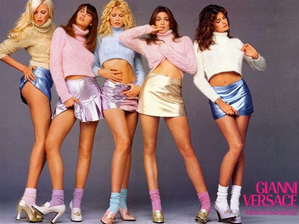

Project 7 — Toggle
90s Mood Switch
Click to jump between two 90s fashion universes: stripped-down Calvin Klein minimalism and loud supermodel glam. The layout stays the same, but the color, image treatment, and labels shift with the decade’s split personality.
90s Minimal — CK

1990s
soft grayscale, clean lines